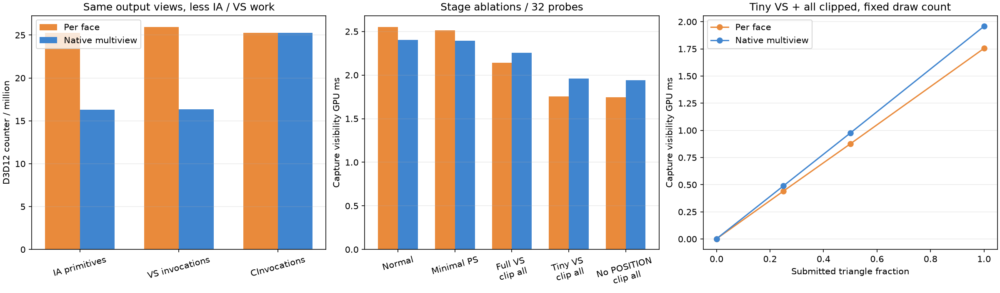

结论：没有发现多视图未真正启用、漏视图或硬件mask未生效的错误；证据主要指向逐视图的大量几何处理吞吐，而非顶点shader中的变换计算、顶点位置流读取或像素材质计算。同时发现并修正了一处不必要的视图依赖：纹理层偏移改由PSO静态设置，VS只输出与视图无关的层基址。修订后1024预算整图耗时变化 -3.47%，仍不构成明显改善。
以下为32个probe、3个固定位置（cursor0/5000/10000）、每位置ABBA两次各模式的均值。原生D3D12_QUERY_DATA_PIPELINE_STATISTICS仅在独立诊断帧启用，计时期间关闭查询。
| 计数/每32probe | 原逐面 | 原生三视图 | 变化 |
|---|---|---|---|
| IA顶点计数 | 75,830,035 | 48,870,278 | -35.55% |
| IA三角形计数 | 25,276,678 | 16,290,093 | -35.55% |
| VS调用计数 | 25,965,936 | 16,333,956 | -37.09% |
| 送入光栅器的primitive计数 | 25,276,678 | 25,276,678 | +0.00% |
| 裁剪后的primitive计数 | 8,516,082 | 8,516,082 | +0.00% |
| PS调用计数 | 1,031,954 | 1,012,292 | -1.91% |
IA及VS计数下降说明确实在共享源几何处理，GS计数为0；不是退回了旧GS或逐视图重放所有输入。送入光栅器的逻辑primitive数量仍接近不变：真实cubemap的各面投影不同，每个视角仍要处理其几何。注意：CInvocations官方定义是送入光栅器的primitive数，不是硬件裁剪周期；VS调用数下降也不等于同样比例的ALU时间下降。不能只凭这些计数指定某一个硬件单元为唯一瓶颈。

| 诊断条件 | 原逐面GPU ms | 多视图GPU ms |
|---|---|---|
| 正常几何捕获 | 2.5532 | 2.4012 |
| 省略PS材质/alpha计算 | 2.5130 | 2.3958 |
| 完整VS，强制全部裁剪 | 2.1433 | 2.2563 |
| 极简VS，强制全部裁剪 | 1.7547 | 1.9578 |
| 极简VS，不输入POSITION流，全裁剪 | 1.7465 | 1.9395 |
| 校准：相同投影、不读取SV_ViewID，全裁剪 | 2.1386 | 1.9045 |
| 极简VS，全裁剪，1/2三角形 | 0.8756 | 0.9753 |
| 极简VS，全裁剪，1/4三角形 | 0.4409 | 0.4887 |
| 空绘制列表 | 0.0017 | 0.0020 |
简化PS几乎不改变耗时；即使使用极简VS、完全不输入顶点POSITION流，且全部primitive在裁剪中丢弃，仍保留明显成本。另一方面，保持绘制命令数量不变、只削减三角形数量时，耗时接近线性减少。这些结果共同支持输入primitive处理/组装、逐视图几何扩展和光栅器前端等吞吐成本占主导，而非VS矩阵计算或PS材质计算占主导。精确区分这些微架构单元仍需要Nsight GPU Trace等硬件性能分析；本机没有安装该工具。
“全部裁剪”会改变管线行为，因此这些耗时差不能直接相减当作各阶段独立耗时。省略alpha会改变遮挡，也只是诊断。空列表只检验固定API/7个mask桶的开销；它不单独测量每条非空draw命令解释成本，但1/2、1/4三角形测试保留了原有draw命令数。诊断几何输出不能作为画质结果。
校准模式5从VS签名中完全去掉SV_ViewID，将组内视图设为同一投影，并强制全裁剪。它只用于观察减少视图相关计算的影响，不能用于正常cubemap。不同模式的CInvocations仍可能按逻辑view统计；这里没有把它解释为真实硬件裁剪被重复执行的次数。正常模式的投影保持各面真实方向。
RTX5070为Tier3；原生PSO创建包含3个视图，开启ViewInstanceMasking，按可见性mask生成7组16/32位索引列表，绘制前设置原生SetViewInstanceMask。两个分组布局都经捕获校验：同probe的三面PSO层偏移为0/1/2；相邻三probe同朝向面为0/6/12。VS输出公共层基址，不再逐视图输出层偏移。这样删除了一个不必要的SV_ViewID依赖；SV_Position仍必须依赖视图。
微软规范明确：Tier3在首次引用SV_ViewID的阶段开始视图实例化；视图相关输出也会按视图数计入输出预算。这里真实投影在VS依赖SV_ViewID，所以不能假定“整个VS只跑一次，后面所有几何工作也都只跑一次”。PSO静态层路由减少了不必要的输出依赖，但没有改变逐视角实际几何量。
同probe分组逐批验证全部10648个probe，共333批：缺失像素 0、额外像素 0、非有限值 0。与旧GS命中点差超过1mm的像素 22,274 个，包含不同三角形取胜的边界差异，故不宣称逐位相同。跨probe分组另验证3批，同样未检出新增缺失像素。
| 方案 | 完整图GPU ms | Probe更新GPU ms | 几何捕获GPU ms | 完整图CPU ms |
|---|---|---|---|---|
| 原逐面 | 83.552 | 81.787 | 80.093 | 3.046 |
| 硬件多视图 | 80.653 | 78.888 | 77.175 | 4.617 |
此表使用生产shader：诊断分支在编译时移除，不采集管线统计，不复制诊断参考纹理，不删三角形。持续更新1024 probe/帧且Accumulate开启；相同进程与场景按ABBA预热32帧、计时128帧，去掉前4条Profiler记录，两轮等权平均。默认仍关闭硬件多视图。下一步应优先减少无用几何，例如meshlet级保守视锥剔除或适合probe捕获的LOD，而不是继续期待单纯多视图共享解决全部成本。
SponzaLambert、默认相机、方向光50、点光关闭、1920×1080、RTX5070/D3D12。22³官方probe布局，256方向/probe，32²六面cubemap、原八点查询。诊断先用射线全量更新512帧，随后冻结同一probe场和位置，以单批32probe隔离绘制；所有模式保留后续真实命中着色：正常模式保存命中纹理，消融模式在几何计时区间外恢复它。避免缺少后续光照工作和资源转换混入对照。
每次计时前用原生查询提交并等待GPU完成预热，NVML确认GPU已升频；期间不采集查询，不调用NVML。计时后另取查询帧及时钟快照。表格为3个位置、每位置每模式两次共6次的均值；各次128帧，去掉前4条记录。不同位置工作量不同，因此不把跨位置方差解释为统计置信区间。
新增的probeCaptureDiagnosticMode、probeCapturePipelineStats、probeCaptureDiagnosticRestore和probeCaptureTriangleDivisor都仅用于诊断，默认关闭/1。消融需要captureOnly及optimized capture，防止污染正常GI。正常shader不含动态诊断分支。此次不重新测完整画质指标，之前稳定画质报告保留；本轮路由变更经全probe几何校验。
全部计数、耗时、时钟和源码哈希。脚本：tests/ddgi/probe_multiview_diagnosis.py、report_probe_multiview_diagnosis.py。上一轮画质与耗时报告。